2022
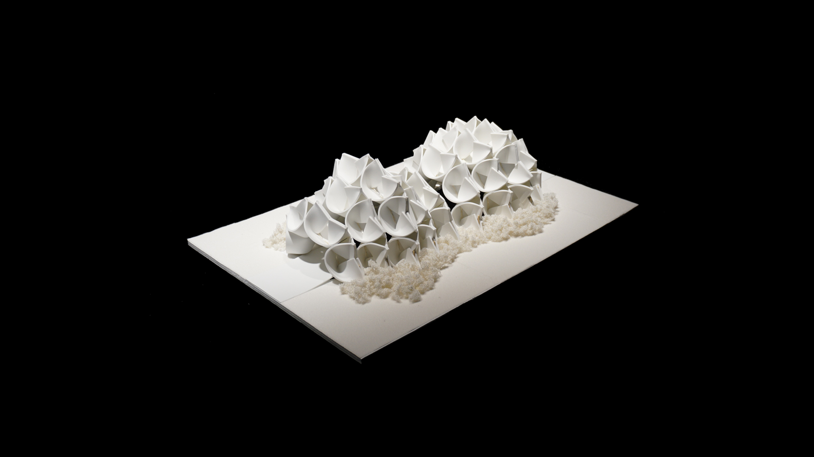
22년 10월 29일 토요일. 늦은 저녁 건축대학에서 설계를 하고 있었다.
그날, 스튜디오에서 이태원 소식을 뉴스로 접했다.
바닥에 쓰러진 사람들이 심폐소생술을 받는 장면이 믿기지 않았다.
다음 날부터 이태원역 입구 주변에는 국화꽃이 쌓이기 시작했다.
밖에서 보았을 때 화려하지만,
안은 면적인 요소들로 가득한
추모 파빌리온을 만들었다.
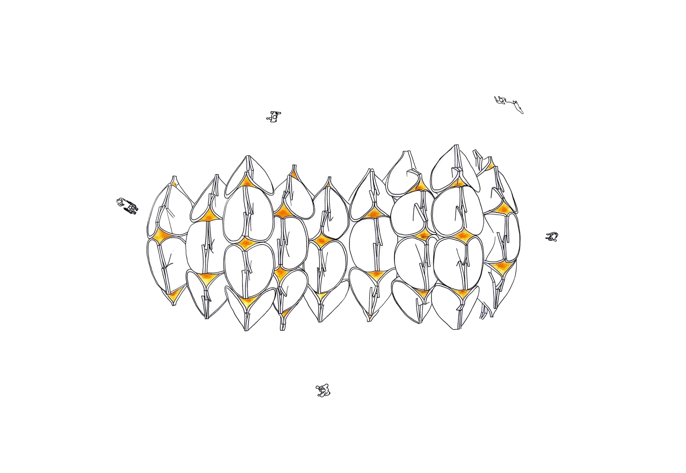
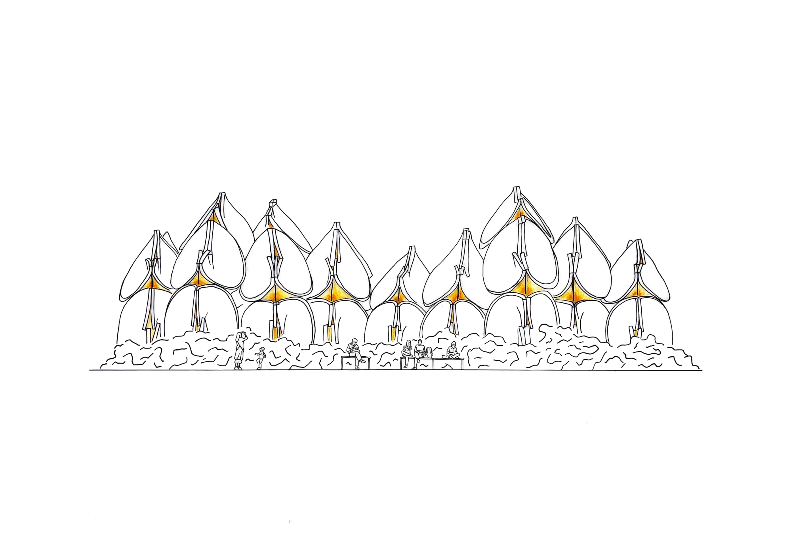
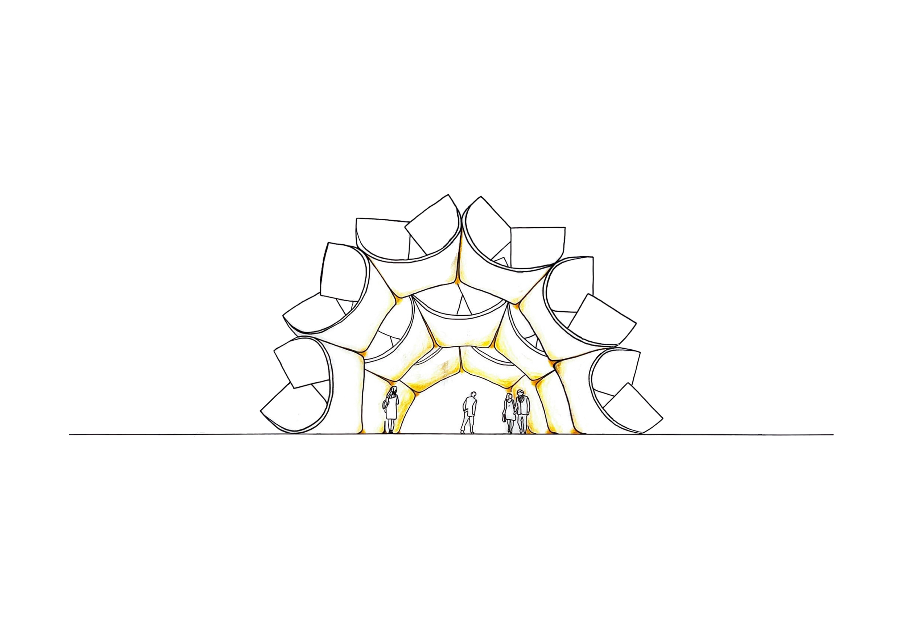
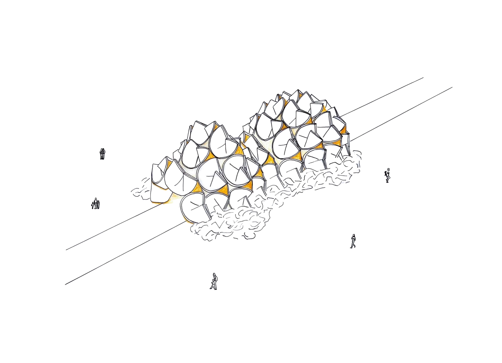
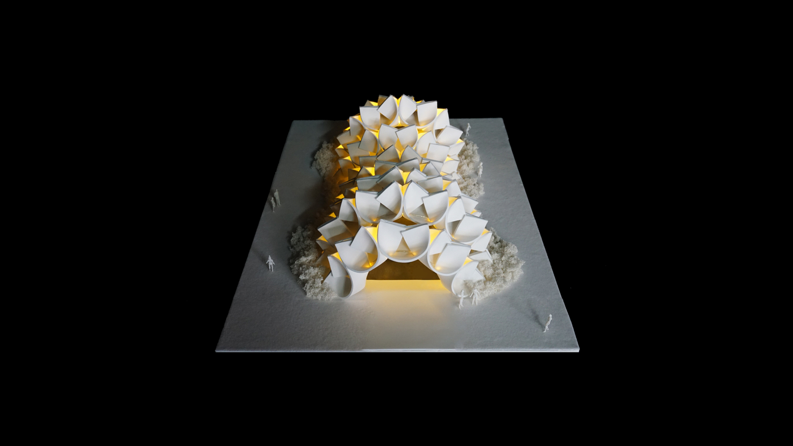
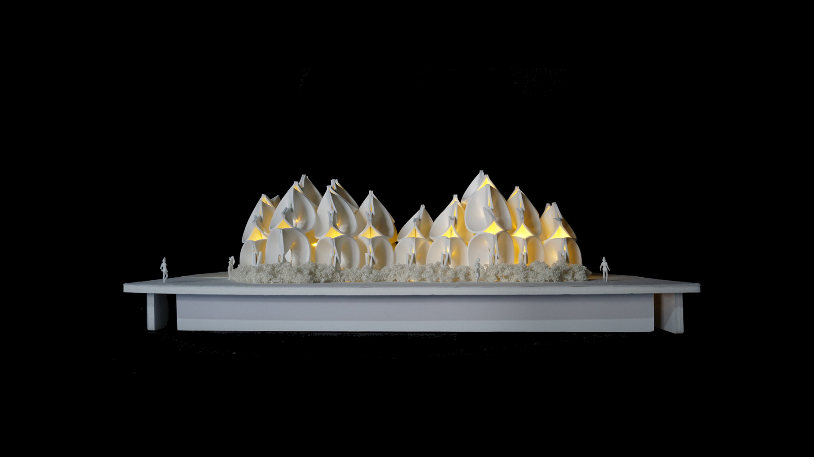
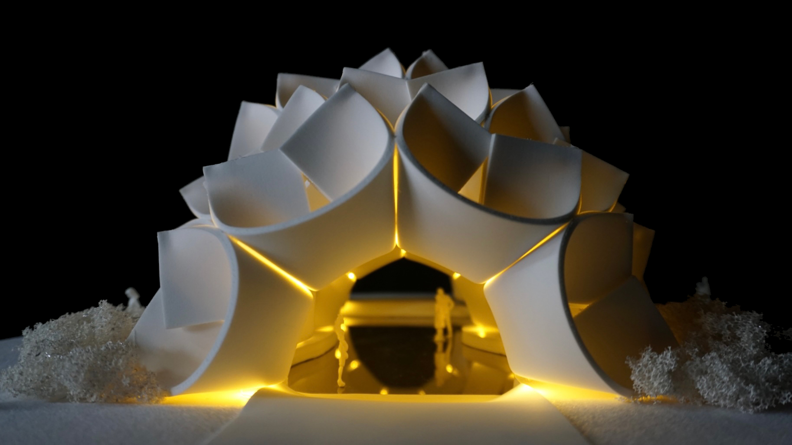
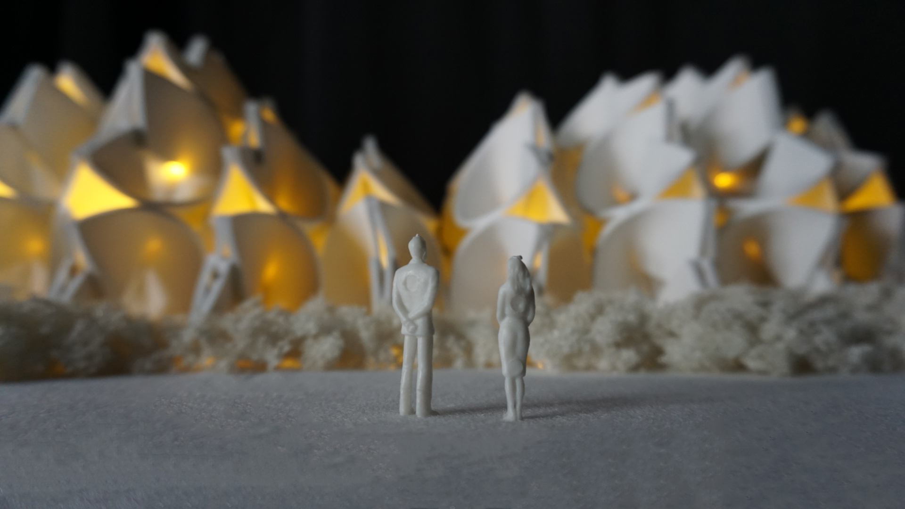
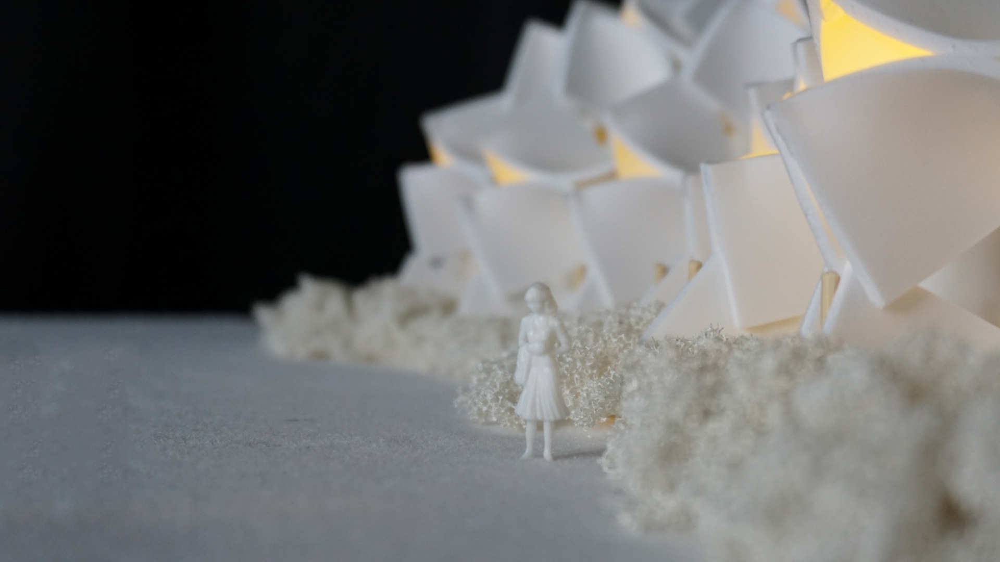
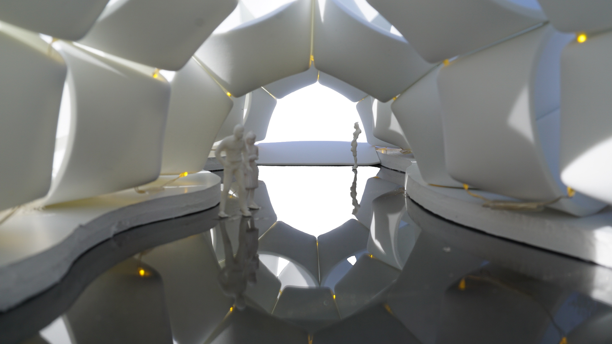